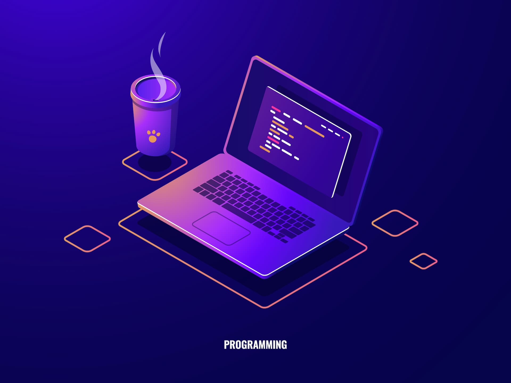

Blog
4 important topic on javascript
What are the differences between local storage and session storage.
SessionStorage is similar to localStorage ; the difference is that while data in localStorage doesn't expire, data in sessionStorage is cleared when the page session ends. Whenever a document is loaded in a particular tab in the browser, a unique page session gets created and assigned to that particular tab.
What are the differences between global scope and block scope

Variables declared Globally (outside any function) have Global
Scope. Global variables can be accessed from anywhere in a
JavaScript program. Variables declared with var, let and const are
quite similar when declared outside a block. They all have Global
Scope.
On the other hand Variables declared within a
JavaScript function, become LOCAL to the function.Since local
variables are only recognized inside their functions, variables
with the same name can be used in different functions. Local
variables are created when a function starts, and deleted when the
function is completed.
How does javascrit event loop works?
The Event Loop has one simple job — to monitor the Call Stack and the Callback Queue. If the Call Stack is empty, the Event Loop will take the first event from the queue and will push it to the Call Stack, which effectively runs it. Such an iteration is called a tick in the Event Loop.
How many ways we get undefined in javascript?

You will get undefined value when you call a non-existent property or method of an object. A variable that has not been assigned a value is of type undefined. A method or statement also returns undefined if the variable that is being evaluated does not have an assigned value. A function returns undefined if a value was not returned.